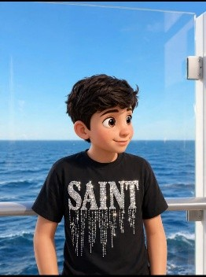
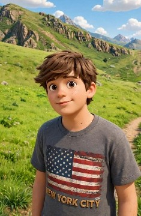
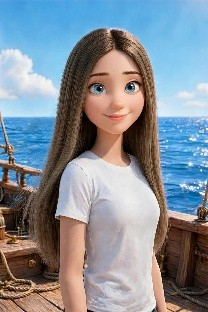

Praga 2026
Si torna a Praga, questa volta con gli studenti: laboratori a scuola, il Ponte Carlo, parchi e orti urbani, e famiglie ospitanti che restano nel cuore.
si torna a Praga, stavolta con i ragazzi!
Sezione B · Allegati fotografici
Tocca un allegato per aprire l'originale a colori


Sezione C · Documentazione video
Sezione D · Dichiarazioni dei partecipanti
Testi originali in inglese
Maria Vittoria
The Erasmus experience was unforgettable. It’s a journey where you grow, learn so many new things, and have unique experiences. It offers you the opportunity to improve your English, immerse yourself in a different culture and make new friends, even from outside Italy.
DICHIARAZIONE N. 1
Elisa
I really enjoyed the Erasmus experience. It helped me to improve my English (by talking and listening), to make new friends, even if they’re really far away, to discover new cultures, and visit new cities. For example, even though my Erasmus was last year, the girl who hosted me and I still talk to each other. Like I said, I loved this experience and I hope to do it again.
DICHIARAZIONE N. 2
Simone
For me, the Erasmus experience was wonderful and meaningful, both for improving my language skills and for making new friends.
DICHIARAZIONE N. 3
Sofia
Erasmus is an experience where I visited new places, discovered new things and where I improved my English skills. I met a lot of people but I didn’t make friends: I became a part of a big family.
DICHIARAZIONE N. 4
Giorgio O.
It was an incredible experience. I had the opportunity to travel in a new city that I enjoyed a lot, and I will always carry in my heart the fantastic family that hosted me. We’re still in touch and text each other often. I will remember this trip for the rest of my life.
DICHIARAZIONE N. 5
Aurora
For me, the Erasmus experience was an opportunity to improve my English while making new friends, and it also gave me the chance to discover new places where I was warmly received.
DICHIARAZIONE N. 6
Registro generale
Torna al frontespizio| N. | Destinazione | Tipologia | Periodo | Descrizione | Stato |
|---|---|---|---|---|---|
| Anno 2026 | |||||
| 11 | Praga 2026 Repubblica Ceca | Group Mobility | 18/05/2026 23/05/2026 | Si torna a Praga, questa volta con gli studenti: laboratori a scuola, il Ponte Carlo, parchi e orti urbani, e famiglie ospitanti che restano nel cuore. 38 foto · 1 video · 9 storie | Conclusa |
| 10 | Elche 2026 Spagna | Group Mobility | 13/05/2026 17/05/2026 | Si torna a Elche: famiglie ospitanti, palmeti, sport a scuola e tante nuove amicizie. 33 foto · 1 video · 6 storie | Conclusa |
| Anno 2025 | |||||
| 09 | Praga 2025 Repubblica Ceca | Staff Mobility | 07/12/2025 10/12/2025 | Ospiti della ScioŠkola Praha Nusle: spazi a misura di bambino e una didattica che nasce dal fare. 12 foto · 1 video · 2 storie | Conclusa |
| 08 | Barcelona Spagna | Job Shadowing | 17/11/2025 21/11/2025 | Job shadowing in una scuola dell'infanzia catalana: inglese, sostenibilità e tanta creatività. 17 foto · 1 video · 2 storie | Conclusa |
| 07 | Benalúa Spagna | Group Mobility | 19/10/2025 24/10/2025 | Andalusia: geologia, cucina, la gita a Guadix e una festa finale che nessuno dimenticherà. 19 foto · 1 video · 6 storie | Conclusa |
| 06 | Madeira Portogallo | Courses & Training | 27/07/2025 03/08/2025 | Formazione docenti a Funchal, tra scogliere sull'Atlantico e mercati colorati. 7 foto | Conclusa |
| 05 | Dublin Irlanda | Courses & Training | 20/07/2025 07/08/2025 | Corsi di formazione per docenti nella capitale irlandese: lingua, metodologie e nuovi colleghi da tutta Europa. 16 foto · 4 storie | Conclusa |
| 04 | Elche 2025 Spagna | Group Mobility | 19/05/2025 23/05/2025 | Tra palmeti, mare e l'isola di Tabarca: sostenibilità e ambiente con i compagni spagnoli. 21 foto · 1 video · 4 storie | Conclusa |
| 03 | Carlow Irlanda | Job Shadowing | 24/03/2025 28/03/2025 | Sostenibilità, orti e laboratori all'aperto: una settimana nel cuore verde dell'Irlanda. 16 foto · 1 video | Conclusa |
| 02 | Thessaloniki Grecia | Job Shadowing | 24/02/2025 28/02/2025 | In Grecia, tra i murales e le aule di una scuola che parla di Europa e di cittadinanza. 14 foto · 1 video · 1 storia | Conclusa |
| Anno 2024 | |||||
| 01 | Braga Portogallo | Group Mobility | 13/05/2024 17/05/2024 | La prima tappa del nostro viaggio: una settimana in Portogallo tra lezioni, visite e famiglie ospitanti. 7 foto · 1 video · 1 storia | Conclusa |